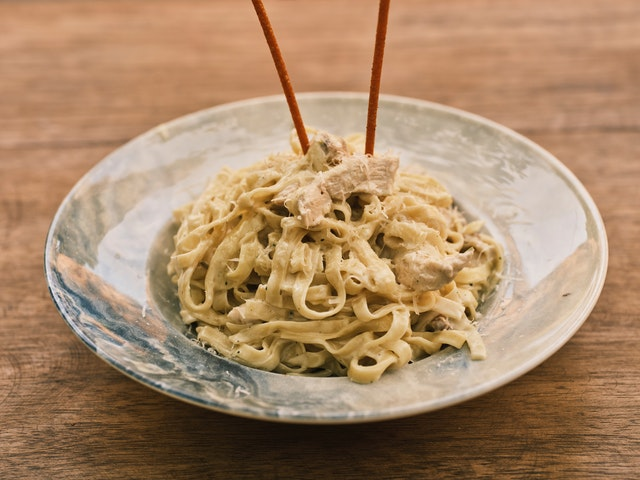

Homemade Alfredo Sauce

This Alfredo Sauce is the most creamy and delicious homemade alfredo sauce that you will ever make! This is a tried and true recipe and you will agree that it is the best recipe out there!
Classic Alfredo Sauce is a simple but elegant creamy, white sauce that is commonly known to lay over pasta noodles. It is made from butter, a type of cream and parmesan cheese. Adding seasonings and cream cheese for a thickener I like to blend a rich, creamy sauce together that is simple and irresistible. The end result of this mixture is satisfying to say the least!
Ingredients:
- ½ cup butter
- 1 pint heavy whipping cream or 2 cups
- 4 ounces cream cheese
- ½ teaspoon minced garlic
- 1 teaspoon garlic powder
- 1 teaspoon italian seasoning
- ¼ teaspoon salt
- ¼ teaspoon pepper
- 1 cup grated parmesan cheese
Steps:
- In a medium saucepan add butter, heavy whipping cream, and cream cheese.
- Cook over medium heat and whisk until melted.
- Add the minced garlic, garlic powder, italian seasoning, salt and pepper.
- Continue to whisk until smooth. Add the grated parmesan cheese.
- Bring to a simmer and continue to cook for about 3-5 minutes or until it starts to thicken.
- Toss it with your favorite pasta!